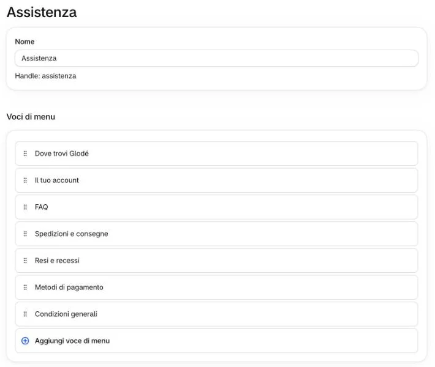

Le due colonne di link in fondo a ogni pagina sono due menu del pannello: «Prodotti» e «Assistenza». Si cambiano come il menu in alto.
Cliccate «Contenuto» → «Menu», poi «Prodotti» o «Assistenza».
Non qui1E «Footer menu» e «Customer account main menu»?
Il piede del sito non li usa: lasciateli come sono.
Per rinominare un link o cambiare dove porta, cliccate la matita, cambiate «Etichetta» o «Link» e cliccate ✓.
Dove si vede la matita?
Passando con il mouse sulla voce, a destra, come nel menu in alto (passi 2 e 3).
Per aggiungere un link, cliccate «Aggiungi voce di menu» in fondo; per l’ordine trascinate la maniglia ⠿.

3
Lasciate «Dove trovi Glodé» come prima voce di «Assistenza».
Non qui4Perché la prima?
La prima voce di «Assistenza» compare anche nel menu del telefono, subito dopo le voci principali. Se la spostate, sul telefono compare al suo posto la voce che diventa prima.
E le quattro voci con il riquadro rosso?
Spedizioni e consegne, Resi e recessi, Metodi di pagamento e Condizioni generali portano a pagine il cui testo è scritto nel tema: non cambiate il loro «Link». Per cambiare quei testi, scriveteci.
Aprite glode-lab.it, scendete in fondo alla pagina e controllate i link.
Sul sito
In fondo a ogni pagina, nel piede: la colonna «Prodotti» (Tutti i prodotti, I più amati, Idee regalo, Scopri il tuo codice, Test Longevity) e la colonna «Assistenza» (Dove trovi Glodé… Condizioni generali).
 Non qui
1
Non qui
1